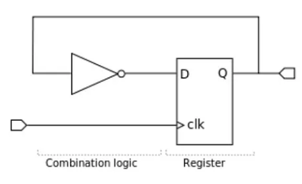

Digital Revolution
Summary
- Who am I?
- Abstract to make easier
- The bleeding edge technology
- What we actually do
- Questions
Who am I?
import resume
name = "joao ariedi"
college = ["physics", "industrial engineering", "cybernetic defense"]
profession = ["generalistic programmer"]
company = ["metabaseQ", "safesphere", "scaffold"]
hobbies = ["mtb", "guitar", "steamdeck", "networks"]
goals = ["fablab", "retirement"]
pets = ["tiffany", "luna"]


Ada Augusta King, Condessa de Lovelace
(1815 - 1852)
Alan Turing
(1912 - 1954)

John Von Neumann
(1903 - 1957)
Teoria dos conjuntos
Teoria dos números e espaços de Hilbert
Mecânica Quântica
Teoria dos jogos (0game)
Automatos Celulares (DNA)
Simulação de explosões (Fatman)
Arquitetura do computador moderno (EDVAC)
Algoritmos de ordenação (Merge Sort)
Abstraction
import meaning as mng
result = mng("abstraction")
print(result)
### OUTPUT ###
# the process of considering something
# independently of its associations,
# attributes, or concrete details.
Nature
| V | I |
|---|---|
| 3 | 0.1 |
| 6 | 0.2 |
| 9 | 0.3 |
Physics Laws
Maxwell's equations
Lamp Circuit Abstraction

Amplifier Abstraction
Digital
Inverters and Combination Gates
Digital
Combination Logic
Clock
Instruction Set Abstraction
x86
Language Abstraction
static int arp_accept(struct in_device *in_dev, __be32 sip)
{
struct net *net = dev_net(in_dev->dev);
int scope = RT_SCOPE_LINK;
switch (IN_DEV_ARP_ACCEPT(in_dev)) {
case 0: /* Don't create new entries from garp */
return 0;
case 1: /* Create new entries from garp */
return 1;
case 2: /* Create a neighbor in the arp table only if sip
* is in the same subnet as an address configured
* on the interface that received the garp message
*/
return !!inet_confirm_addr(net, in_dev, sip, 0, scope);
default:
return 0;
}
}
Software Systems Abstraction
import os
print(os.list)
### OUTPUT ###
["linux", "w..."]
###
What can we do?

AI
Molecular Machines
Personal Fabrication

Crypto Currency

Questions? Anxieties? Perplexities? Dreams?